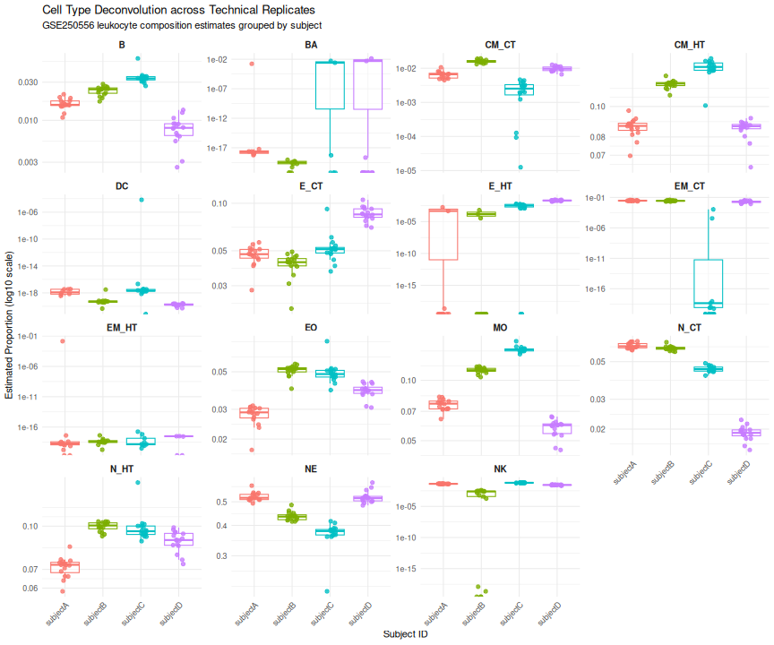

GSE250556 Benchmarks: Sample Tracking and Cell Type Deconvolution
Jonathan Heiss
2026-11-22
benchmark_gse250556.RmdThis vignette demonstrates two key quality control benchmarks using the public dataset GSE250556, which contains repeated technical replicates across multiple subjects:
-
Sample Tracking and Mix-up Detection: Inferring
donor identity from SNP probes to verify concordance between metadata
annotations and genetic fingerprints (
call_genotypes(),enumerate_sample_donors()). -
Cell Type Deconvolution Reproducibility: Assessing
the consistency of leukocyte composition estimation
(
estimateLC()) across technical replicates of the same individual.
library(ewastools)
requireNamespace("dplyr")
requireNamespace("tidyr")
library(ggplot2)Data Preparation
We first download the raw IDAT files from GEO and then retrieve the
sample metadata. GEO provides all supplementary files of a series as a
single tar archive (GSE250556_RAW.tar) containing the
gzipped IDAT files, which read_idats() can import directly
without decompressing them.
data_dir = "GSE250556_RAW"
dir.create(data_dir, showWarnings = FALSE)
# Download and unpack the archive of raw IDAT files (~1.1 GB)
if (length(list.files(data_dir, pattern = "\\.idat(\\.gz)?$")) == 0) {
tar_file = file.path(data_dir, "GSE250556_RAW.tar")
options(timeout = max(3600, getOption("timeout"))) # large file
download.file(
"https://www.ncbi.nlm.nih.gov/geo/download/?acc=GSE250556&format=file",
method = "libcurl", destfile = tar_file,
mode = "wb")
untar(tar_file, exdir = data_dir)
file.remove(tar_file) # delete the archive to save disk space
}
#> [1] TRUE
# 1. Fetch metadata from GEO
pheno_url = "https://www.ncbi.nlm.nih.gov/geo/query/acc.cgi?acc=GSE250556&targ=gsm&form=text&view=brief"
pheno = readLines(pheno_url)
pheno = split(pheno, cumsum(stringr::str_detect(pheno, "^\\^SAMPLE = GSM")))
names(pheno) = purrr::map_chr(pheno, 1) |> stringr::str_extract("GSM\\d+")
pheno_df = pheno |>
purrr::map(tibble::tibble) |>
dplyr::bind_rows(.id = "gsm") |>
tidyr::separate_wider_delim(2, delim = " = ", names = c("var", "val"),
too_many = "merge", too_few = "align_start") |>
dplyr::filter(var == "!Sample_title") |>
dplyr::mutate(subject_id = stringr::str_extract(val, "subject[A-Z]"))
# 2. Find local IDAT files
idats = list.files(data_dir, pattern = "_Grn\\.idat(\\.gz)?$", full.names = TRUE)
files_df = tibble::tibble(
prefix = stringr::str_remove(idats, "_Grn\\.idat(\\.gz)?$"),
gsm = stringr::str_extract(basename(prefix), "^GSM\\d+"))
# Merge metadata with local files
pheno_df = dplyr::inner_join(pheno_df, files_df, by = "gsm", unmatched = "error")
# 3. Read IDAT files
meth = ewastools::read_idats(pheno_df$prefix, quiet = TRUE)
#> [1] 1051943Benchmark 1: Sample Tracking and Mix-up Detection
Illumina DNA methylation microarrays contain a panel of SNP (single
nucleotide polymorphism) probes (prefixed with rs). These
probes can be used to call genotypes and verify that samples collected
from the same individual indeed share the same genetic profile.
# Identify SNP probes in manifest
snps = meth$manifest$index[meth$manifest$probe_type == "rs"]
# Calculate beta values for SNPs
M_snps = meth$M[snps, , drop = FALSE]
U_snps = meth$U[snps, , drop = FALSE]
beta_snps = M_snps / (M_snps + U_snps + 100)
# Call genotypes and cluster samples by shared donor profile
genotypes = ewastools::call_genotypes(beta_snps, learn = FALSE)
pheno_df$donor_id = ewastools::enumerate_sample_donors(genotypes)
# Verify mapping between metadata subjects and methylation-inferred donors
pheno_df |>
dplyr::count(subject_id, donor_id) |>
print()
#> # A tibble: 4 × 3
#> subject_id donor_id n
#> <chr> <dbl> <int>
#> 1 subjectA 1 16
#> 2 subjectB 2 16
#> 3 subjectC 3 16
#> 4 subjectD 4 16As shown in the table above, all replicates for each subject group together into a unique inferred donor ID, confirming that there were no sample mislabelings or mix-ups.
Benchmark 2: Reproducibility of Cell Type Deconvolution
Whole blood consists of heterogeneous cell populations. Cell type deconvolution estimates the proportion of major leukocyte cell types from DNA methylation profiles. Across technical replicates of the same biological sample, cell type estimates should show high consistency and minimal variance.
Pre-processing
Before cell type estimation, we apply detection p-value masking and dye-bias correction:
beta_full = meth |>
ewastools::detectionP() |>
ewastools::mask(0.01) |>
ewastools::correct_dye_bias() |>
ewastools::beta_values()Estimating Leukocyte Composition
We estimate cell proportions using the reference dataset for blood
(ref = "HRS"):
LC = ewastools::estimateLC(beta_full, ref = "HRS")
pheno_df = cbind(pheno_df, as.data.frame(LC))
cell_types = colnames(LC)
head(LC)
#> NE EO BA MO EM_CT CM_CT
#> <num> <num> <num> <num> <num> <num>
#> 1: 0.4925583 0.03153626 1.452408e-18 0.08233782 0.02575208 6.590505e-03
#> 2: 0.4198475 0.05260778 -5.493842e-20 0.11687860 0.02160666 1.314048e-02
#> 3: 0.2143828 0.07580905 -1.070670e-17 0.15673305 0.00000000 9.353494e-05
#> 4: 0.5140518 0.03739388 0.000000e+00 0.05963437 0.01548316 8.051710e-03
#> 5: 0.5344942 0.02832686 -3.691689e-20 0.07192816 0.03170835 5.199181e-03
#> 6: 0.5398085 0.02683937 7.663980e-19 0.07186880 0.03531662 7.004378e-03
#> E_CT N_CT EM_HT CM_HT E_HT N_HT
#> <num> <num> <num> <num> <num> <num>
#> 1: 0.05491703 0.06561123 1.346272e-19 0.08569847 0.000000e+00 0.07338285
#> 2: 0.04769899 0.06130328 1.208175e-19 0.12508048 -1.845570e-19 0.10386758
#> 3: 0.09202178 0.04892891 1.770385e-17 0.10070301 5.745029e-03 0.14323552
#> 4: 0.09515268 0.01925145 -6.825794e-19 0.08404166 1.692134e-02 0.09701428
#> 5: 0.04517373 0.06094843 4.093801e-19 0.09145584 0.000000e+00 0.06605225
#> 6: 0.04102596 0.05844895 1.055063e-19 0.08136661 0.000000e+00 0.07072687
#> B DC NK
#> <num> <num> <num>
#> 1: 0.021191228 -4.768571e-20 0.04297456
#> 2: 0.022404588 -5.836231e-20 0.00000000
#> 3: 0.059378679 2.106253e-17 0.05149537
#> 4: 0.007957193 2.304132e-20 0.02553007
#> 5: 0.015654854 3.428622e-18 0.04140494
#> 6: 0.016002767 -2.827444e-20 0.04216014Visualizing Deconvolution Reproducibility
We reshape the data to plot the estimated proportions of each cell type across technical replicates, grouped by subject:
pheno_df |>
tidyr::pivot_longer(
cols = dplyr::all_of(cell_types),
names_to = "Cell Type", values_to = "Proportion") |>
ggplot(aes(x = subject_id, y = Proportion, color = subject_id)) +
geom_boxplot(outlier.shape = NA, alpha = 0.5) +
geom_jitter(width = 0.15, size = 1.8, alpha = 0.8) +
scale_y_continuous(trans = "log10") +
facet_wrap(vars(`Cell Type`), scales = "free_y") +
theme_minimal() +
labs(
title = "Cell Type Deconvolution across Technical Replicates",
subtitle = "GSE250556 leukocyte composition estimates grouped by subject",
x = "Subject ID",
y = "Estimated Proportion (log10 scale)",
color = "Subject") +
theme(
legend.position = "none",
strip.text = element_text(face = "bold", size = 10),
axis.text.x = element_text(angle = 45, hjust = 1))
#> Warning in transformation$transform(x): NaNs produced
#> Warning in scale_y_continuous(trans = "log10"): log-10 transformation
#> introduced infinite values.
#> Warning in transformation$transform(x): NaNs produced
#> Warning in scale_y_continuous(trans = "log10"): log-10 transformation
#> introduced infinite values.
#> Warning: Removed 127 rows containing non-finite outside the scale range
#> (`stat_boxplot()`).
#> Warning: Removed 69 rows containing missing values or values outside the scale
#> range (`geom_point()`).
plot of chunk plot_replicates
The plot illustrates high consistency across technical replicates
within each subject, demonstrating robust reproducibility for
estimateLC().